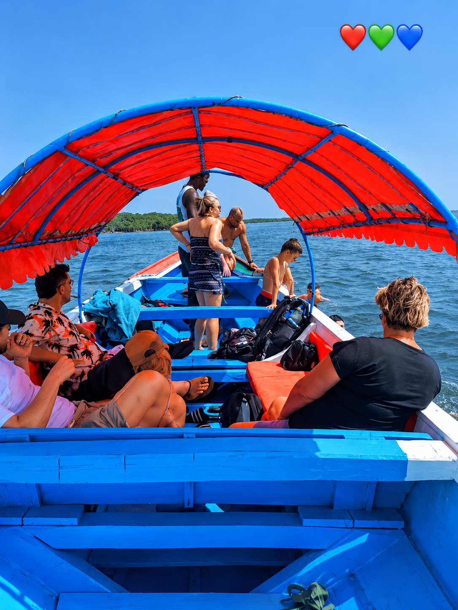
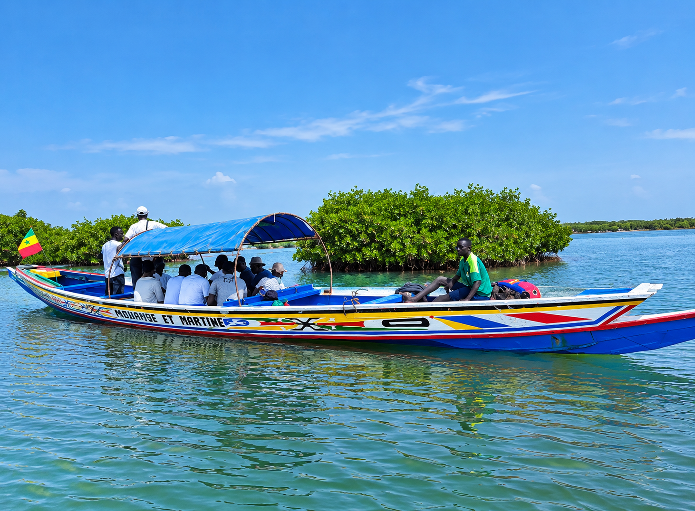
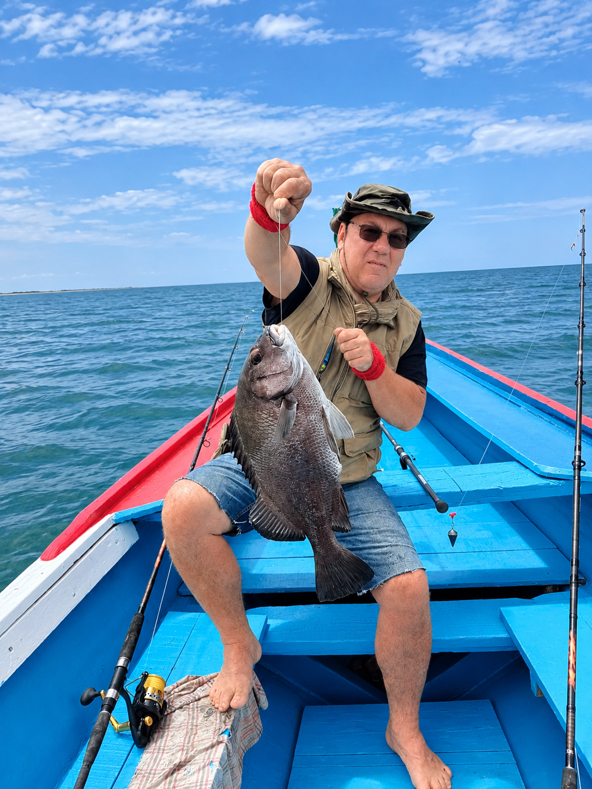
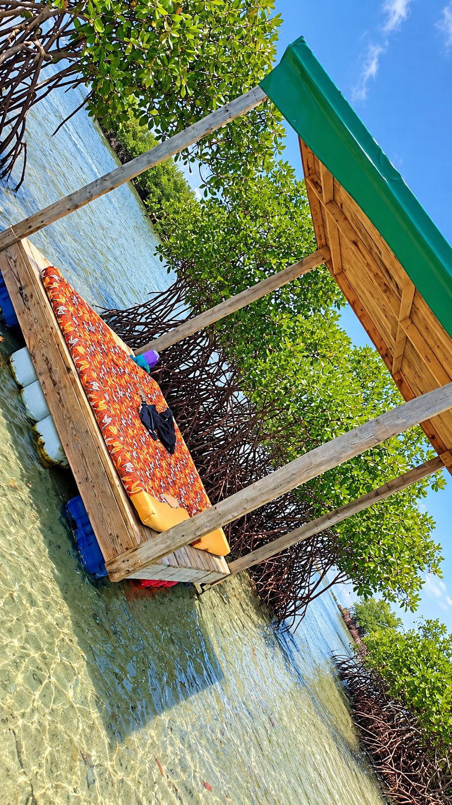
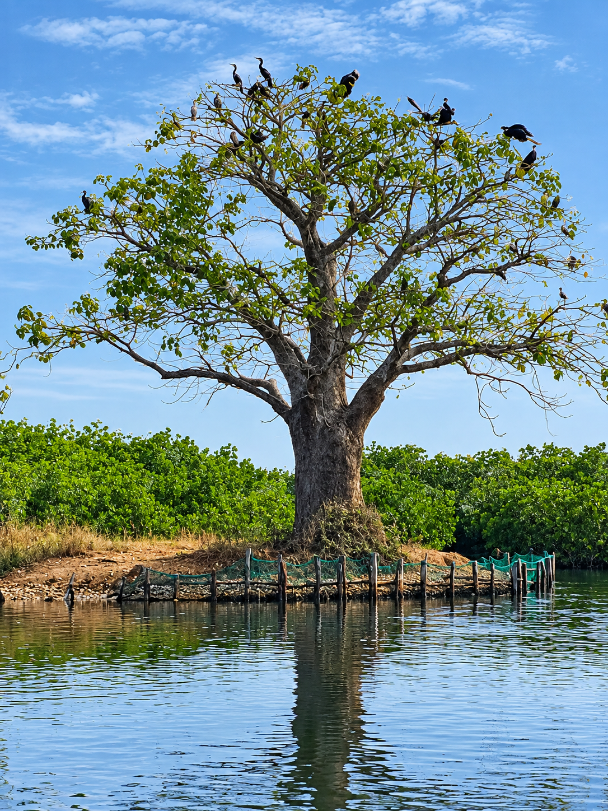
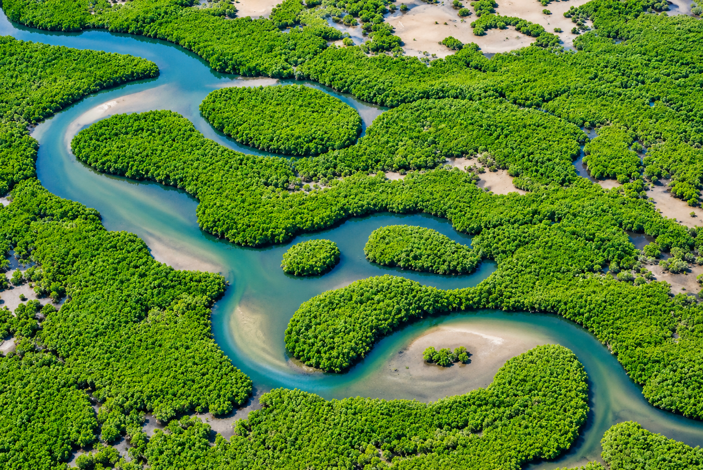
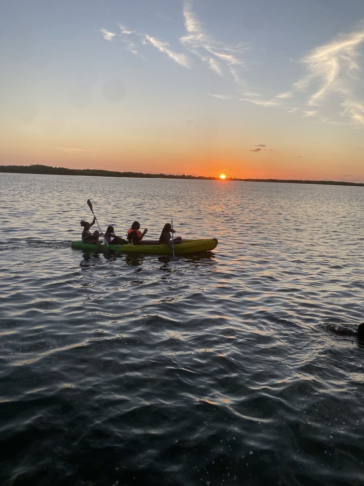
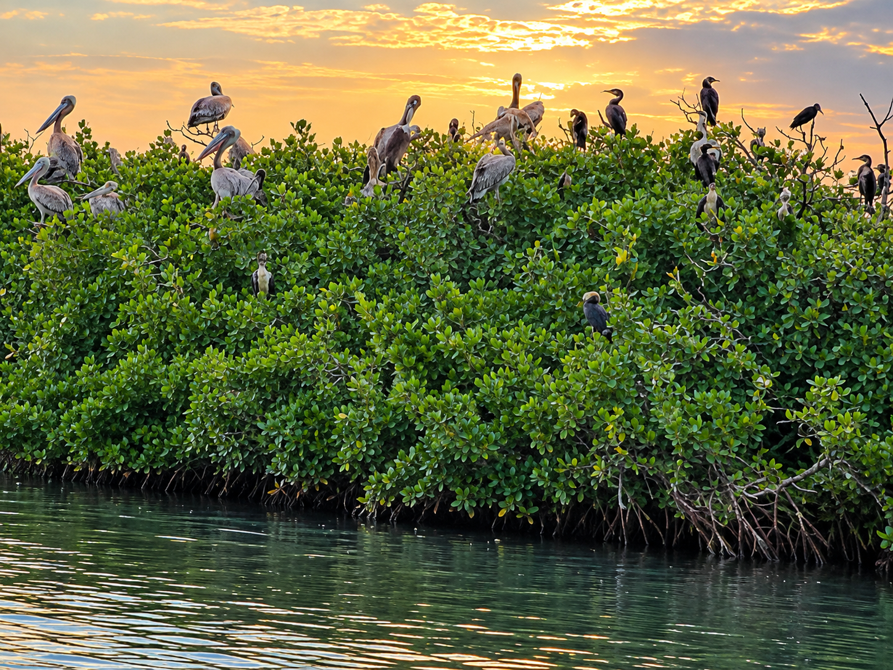
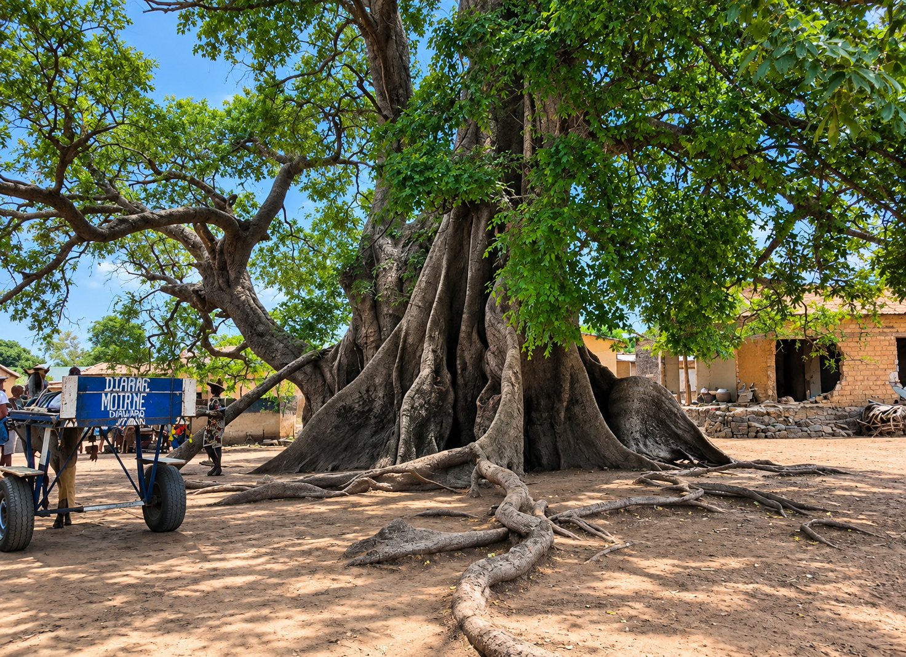

Réserve de biosphère UNESCO · Delta du Saloum
Bolongs sauvages, mangroves millénaires, villages de pêcheurs. Des excursions authentiques au cœur de l'une des plus belles réserves naturelles d'Afrique de l'Ouest.
Notre approche
Le Delta du Saloum, c'est 180 000 hectares de bolongs, d'îles et de mangroves classés réserve de biosphère par l'UNESCO. Loin du tourisme de masse, Mar Lodj et ses îles voisines vivent encore au rythme des marées et des piroguiers.
Nos excursions sont organisées directement avec les acteurs locaux — piroguiers, guides et gérants de campements de l'île. Chaque sortie finance directement les familles du delta.

Toutes les excursions incluent les équipements de sécurité, l'encadrement local et le transport en pirogue traditionnelle.

Explorez les canaux naturels du delta à bord d'une pirogue traditionnelle. Mangroves, oiseaux migrateurs et silence absolu.

Sortie en mer avec les pêcheurs de Mar Lodj. Filets, lignes et techniques ancestrales. Le poisson du jour finit sur votre table.

Pirogue jusqu'à un banc de sable isolé. Installation sur l'eau, repas préparé par le campement, coucher de soleil sur les bolongs.

Traversée vers Mar Lodj, visite guidée de l'île, rencontre avec les villageois, sites du delta et déjeuner local inclus.




Depuis Dakar, 3h de route jusqu'à Foundiougne ou Karang, puis traversée en pirogue vers Mar Lodj (15 à 30 min). Nous pouvons organiser le transport depuis Dakar sur demande.
Novembre à mai : temps sec, mer calme, idéal pour les pirogues. Juin à octobre : saison des pluies, végétation luxuriante, moins de monde mais navigation parfois délicate.
Crème solaire, chapeau, lunettes de soleil, vêtements légers, chaussures fermées pour l'île, appareil photo étanche recommandé. Gilets de sauvetage fournis par nos partenaires.
Minimum 2 personnes, maximum 8 par pirogue. Pour les groupes de 9 à 20 personnes, nous organisons plusieurs pirogues en convoi. Tarifs dégressifs dès 4 personnes.
Wave, Orange Money ou espèces sur place. Acompte de 30% à la réservation en ligne. Solde à régler au départ de l'excursion.
Annulation gratuite jusqu'à 48h avant l'excursion. En cas de conditions météo défavorables, nous reportons ou remboursons intégralement sans frais.
Réservation en ligne
Choisissez votre excursion et réservez en quelques secondes.
Confirmation immédiate par WhatsApp et QR code.